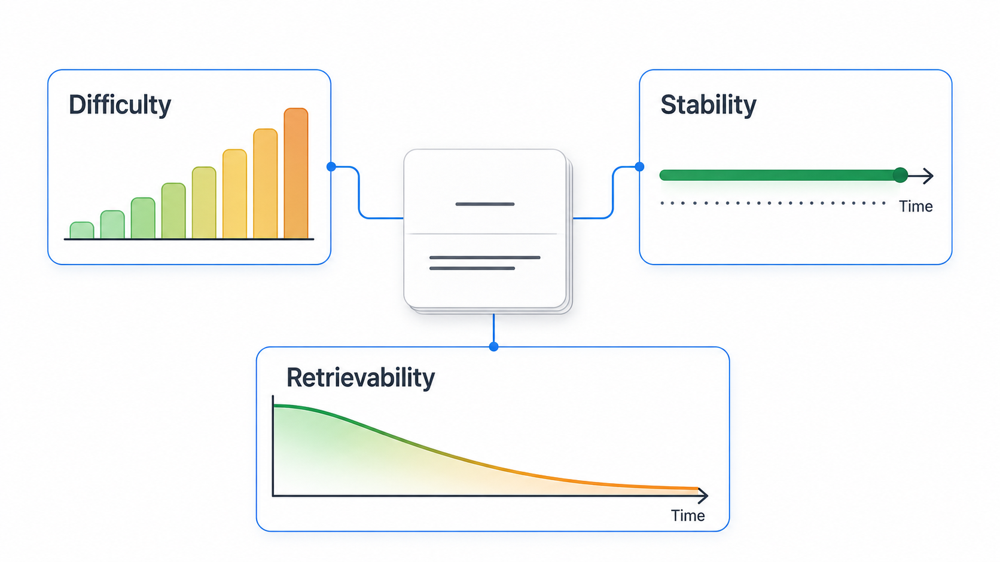

Use Anki difficulty to find patterns across cards, not to diagnose one isolated review. The useful outcome is rarely “change the number.” It is usually “inspect why this group of cards remains expensive to remember.”
Difficulty, stability, and retrievability are different
FSRS models memory with related but distinct states. Reading one without the others creates misleading conclusions.
| State | What it describes | How to use it |
|---|---|---|
| Difficulty (D) | How readily a card’s memory can be strengthened by review | Find cards or topics that remain costly over time |
| Stability (S) | How long memory can last before recall probability falls to a reference level | Compare how durable different memories have become |
| Retrievability (R) | The estimated probability of recalling the card now | Understand why a card is near or far from review |
The FSRS algorithm represents difficulty on a scale from 1 to 10. Stability is measured in time, while retrievability changes as time passes. The FSRS algorithm documentation defines the model and formulas in detail.

What median difficulty tells you
The median is the middle value after sorting the selected cards by difficulty. Half sit below it and half above it. It is less sensitive to a small number of extreme cards than an average, which makes it a useful summary of a deck or selection.
A median difficulty of 7 is not automatically bad, and a median of 3 is not automatically good. The value depends on the material, card design, review history, and how consistently answer buttons reflect actual recall. Compare similar material over time rather than comparing unrelated decks as if they were standardized tests.
Why a card can remain difficult
Several causes can produce the same high-difficulty signal:
- The prompt is overloaded. One card asks for several independent facts, so partial recall repeatedly becomes failure.
- The cue is ambiguous. Multiple answers could reasonably fit the wording.
- The material was never understood. Repetition cannot replace the missing explanation.
- Similar concepts interfere. The card lacks the contrast needed to separate close alternatives.
- Ratings are inconsistent. Using Hard when the answer was forgotten tells FSRS that recall succeeded with difficulty.
Difficulty is therefore best treated as a triage signal. Open a sample of high-difficulty cards and look for shared causes before rewriting an entire deck.
Find cards worth inspecting
Recent Anki versions with FSRS enabled support searches based on memory state. The official Anki search documentation includes filters for difficulty, stability, and retrievability.
Start with a deliberately small sample. Select cards above a meaningful difficulty threshold in one deck, then inspect ten to twenty of them. Record the reason each card feels difficult: unclear cue, long answer, weak source understanding, interference, or genuinely complex material.
The count in each category matters more than perfect labels. If eight of ten difficult cards contain long enumerations, you have found a design problem. If the sample is diverse and factually demanding, the difficulty may accurately reflect the material.
Repair the cause without gaming FSRS
- Rewrite ambiguous prompts so one answer clearly satisfies the question.
- Split independent retrieval targets, but keep context that is necessary for meaning.
- Add a contrast when two concepts are repeatedly confused.
- Return to the source when the card tests something never understood.
- Use Again for failed recall and Hard only for correct recall with substantial difficulty.
Do not press Easy to force the difficulty down or manipulate future intervals. Ratings should describe the review you just completed, not the schedule you want to see.
Watch the trend after card repair
A repaired card needs real reviews before its memory state becomes informative again. Track whether failures, seconds per card, and stability improve over time. Avoid repeated edits based on one answer.
For the wider context—true retention, daily load, and future due—use the companion guide to Anki retention and review statistics. Difficulty explains one part of the system; it should not become the entire dashboard.
Turn a number into a decision.
SynapsePro combines learning statistics with card-side tools, planning, and focus features so difficult material can lead to a clearer next action.
Get SynapsePro free